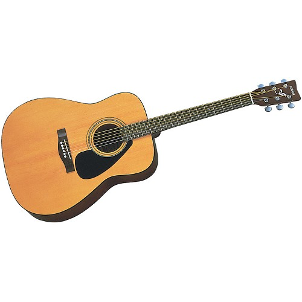

Yamaha F310 Acoustic Guitar
F310 bisa menjadi pilihan yang cocok untuk kamu! Dengan mengusung lebar fingerboard yang lebih sempit dibanding gitar pada umumnya, gitar ini dapat menguntungkan bagi kamu yang memiliki jari yang pendek sehingga tidak mengalami kesulitan dalam menjangkau senar gitar. Harga gitar ini Rp 1.000.000,00.